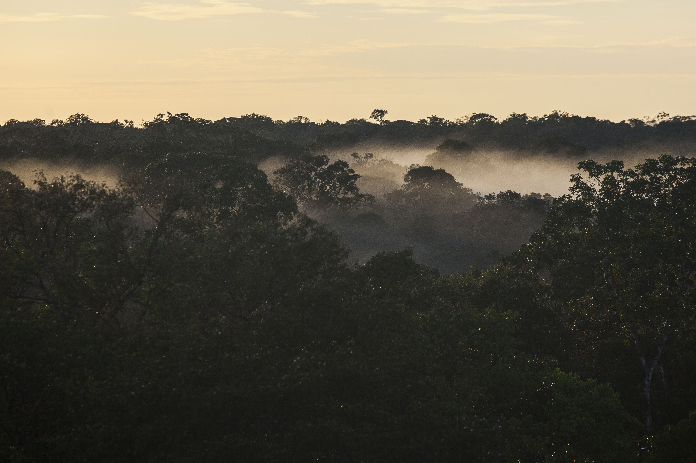

Mudanças climáticas e aumento do CO2 na Amazônia
Mudanças rápidas no clima da Terra causadas pela queima de combustíveis fósseis e desmatamento representam uma grave ameaça para as florestas da bacia amazônica. Prevê-se que as temperaturas mais quentes e as condições mais secas causem uma grande “savanização” da floresta, o que ameaçaria a economia, o bem-estar social e o capital natural da região através de mudanças, por exemplo, na produção agrícola e no fornecimento de energia hidrelétrica. As implicações são globais: as florestas da Amazônia regulam o clima através da ciclagem do carbono, da água e da energia; elas também abrigam uma grande fração da biodiversidade mundial e prestam serviços substanciais a toda a humanidade. O impacto das mudanças climáticas nos ecossistemas tropicais, no entanto, é altamente incerto. Reduzir essa incerteza é fundamental para orientar políticas de desenvolvimento futuras para a região amazônica, bem como avaliações globais da vulnerabilidade do ecossistema às mudanças climáticas.
O programa AmazonFACE destina-se a resolver uma fonte chave dessa incerteza: o potencial do aumento das concentrações atmosféricas de CO2 - que é a real causa direta das mudanças climáticas – em proteger as florestas tropicais contra os efeitos deletérios das mudanças climáticas, estimulando o crescimento e a resiliência da floresta à secas. A existência, a magnitude e a duração deste efeito de fertilização por CO2 nas florestas tropicais permanecem em grande parte indeterminadas, apesar de sua potencial importância para o ciclo global do carbono. Um Experimento de Enriquecimento de CO2 ao Ar Livre (FACE – Free-Air CO2 Enrichment) é a abordagem científica mais direta e robusta para reduzir essa incerteza. Nenhum experimento como este já foi tentado em uma floresta tropical, apesar do reconhecimento de longa data pela comunidade científica e política da necessidade de tal experimento.
